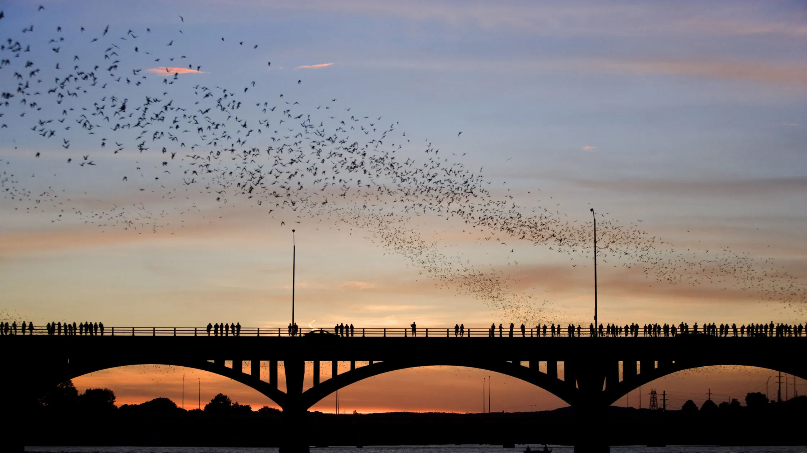
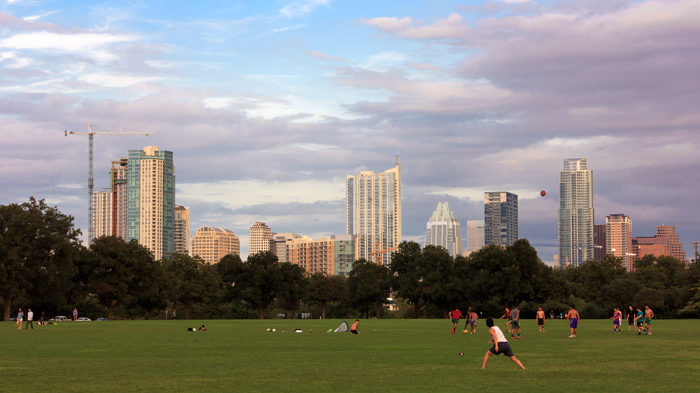
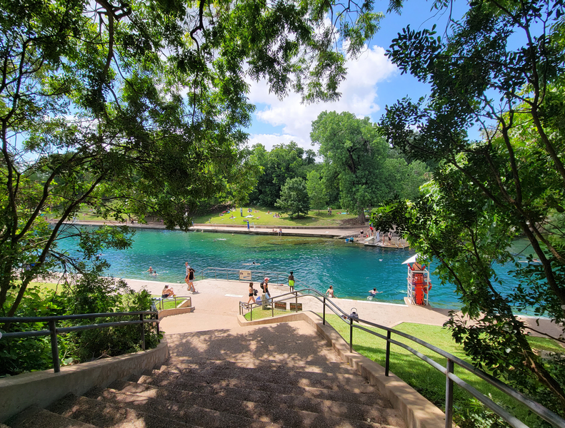

Top Attractions
Congress Avenue Bridge Bat Colony
Congress Avenue Bridge in Austin is home to the largest urban bat colony in North America. Each evening from March to November, around 1.5 million Mexican free-tailed bats emerge at dusk, creating a spectacular sight as they take to the skies. This natural phenomenon attracts both locals and tourists, offering a unique and memorable experience. Watching the bats is a must-see event that highlights Austin's commitment to wildlife conservation and its vibrant outdoor culture.
Zilker Park
Zilker Park is Austin's premier outdoor destination, offering over 350 acres of green space for recreation and relaxation. Located near downtown, the park features a variety of attractions, including botanical gardens, hiking trails, and the popular Zilker Zephyr miniature train. It's a perfect spot for picnics, outdoor sports, and enjoying the natural beauty of Austin. Zilker Park also hosts numerous events and festivals throughout the year, making it a vibrant hub of community activity.
Barton Springs
Barton Springs is a natural spring-fed pool located within Zilker Park, renowned for its crystal-clear waters and year-round temperature of around 68-70 degrees Fahrenheit. This iconic swimming spot is a favorite among locals and visitors alike, offering a refreshing escape from the Texas heat. The pool's unique setting and pristine waters make it a must-visit destination for anyone looking to experience Austin's natural beauty. Barton Springs also holds historical and cultural significance, adding to its charm and appeal.
Austin Ghosts

Austin Ghosts offers spine-chilling tours that delve into the city's haunted history. Guided by knowledgeable storytellers, these tours take you through some of Austin's most haunted locations, e.g., the Driskill Hotel, sharing eerie tales of spirits and supernatural occurrences. It's a thrilling way to explore the darker side of Austin's past and experience the city's rich folklore. Whether you're a skeptic or a believer, Austin Ghosts provides an entertaining and spooky adventure.
The Museum of the Weird

The Museum of the Weird in Austin is a quirky attraction that showcases an eclectic collection of oddities and curiosities. From shrunken heads to two-headed animals, this museum offers a fascinating glimpse into the bizarre and unusual. It's a fun and intriguing destination for those looking to explore the stranger side of history and culture. The museum's unique exhibits make it a must-visit for anyone with a taste for the extraordinary.